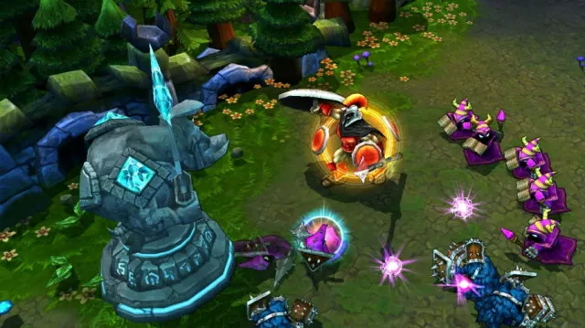
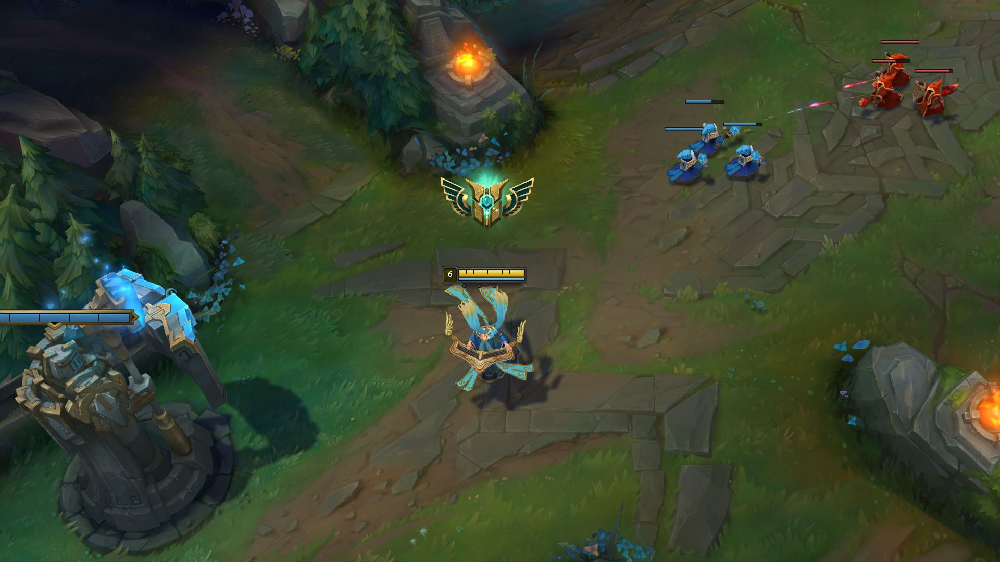

Poradnik do League of Legends (LoL)
1. Podstawy:
LoL to MOBA (Multiplayer Online Battle Arena), gdzie dwie drużyny po pięciu graczy walczą na
mapie. Celem jest zniszczenie bazy przeciwnika, a gracz kontroluje jedną postać z unikalnymi umiejętnościami.
2. Pozycje:
- Top: Gracz grający na górnej alei. Zwykle wybiera bohaterów tanków lub bruiserów.
- Mid: Gracz na środkowej alei, często używa magów lub zabójców.
- Bot: Para graczy, z których jeden to AdCarry (strzelec), a drugi to Support (wsparcie).
- Jungle: Gracz, który nie siedzi na alei, ale przemieszcza się po dżungli, zbierając potwory i pomagając innym graczom (tzw. ganki).
3. Rozgrywka:
- Last hitting: Aby zdobywać złoto, musisz "dobijać" przeciwnych minionów, co oznacza, że musisz uderzyć w nie w odpowiednim momencie.
- Map Awareness: Zwracaj uwagę na minimapę i staraj się unikać niepotrzebnych walk. Ganki od junglera mogą szybko zmienić bieg gry.
- Kontrola obiektów: W LoL masz różne cele, takie jak Dragon, Baron Nashor i Herald. Ich zabijanie daje drużynie potężne buffy, które mogą przesądzić o wyniku gry.
4. Kluczowe wskazówki:
- Bardzo ważna komunikacja: Informowanie drużyny o pozycjach wrogów, używanych umiejętnościach i możliwych zagrożeniach to podstawa.
- Wybór bohaterów: Ucz się kilku bohaterów na każdą rolę, aby nie być uzależnionym od jednej postaci.
- Pozycjonowanie: W trakcie walk grupowych dbaj o odpowiednią pozycję, unikaj bycia w centrum walki, jeśli jesteś AdCarry, i staraj się utrzymać dystans.

